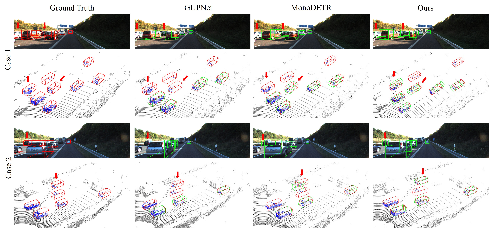

|

|
Visual Results

@article{jiang2024monomae,
title={MonoMAE: Enhancing Monocular 3D Detection through Depth-Aware Masked Autoencoders},
author={Jiang, Xueying and Jin, Sheng and Zhang, Xiaoqin and Shao, Ling and Lu, Shijian},
journal=NeurIPS,
year={2024}
}
|